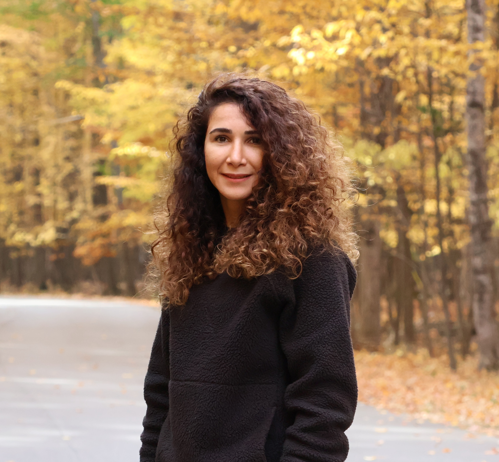

About Me
I am a third-year PhD student in the IPRoBe Lab under the supervision of Dr. Arun Ross. With a bachelor’s degree in Mathematics and a master’s in Mechanical Engineering, I bring a strong analytical and interdisciplinary perspective to my research.
Over the course of my work, I have contributed to a variety of projects involving facial enhancement, video frame selection, and multimodal fusion of face and body biometric data. Currently, my research focuses on developing AI-based frameworks to support cosmetic surgery procedures, advancing facial aesthetics enhancement through innovative computational methods.
Publications
You can find a complete list of my publications on my Google Scholar profile. Here are a few selected works:
- Anomalous nonlinear dynamics behavior of fractional viscoelastic beams
- Farsight: A physics-driven whole-body biometric system at large distance and altitude 2